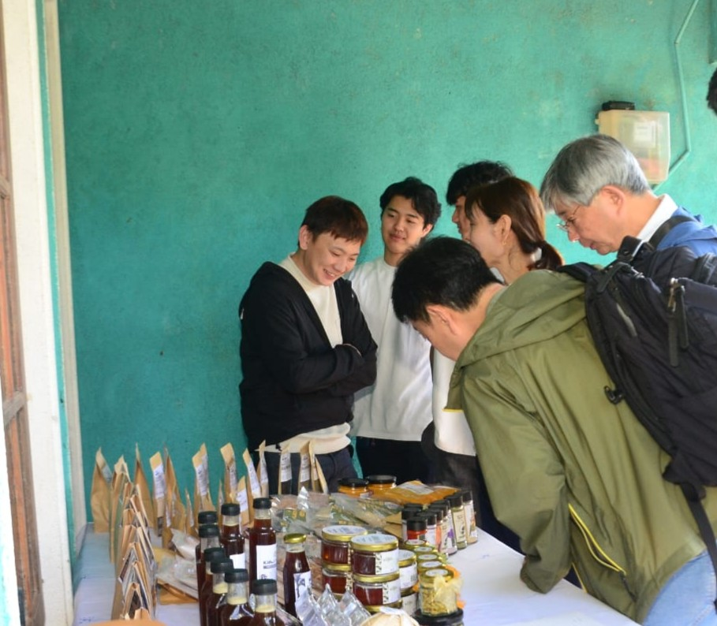
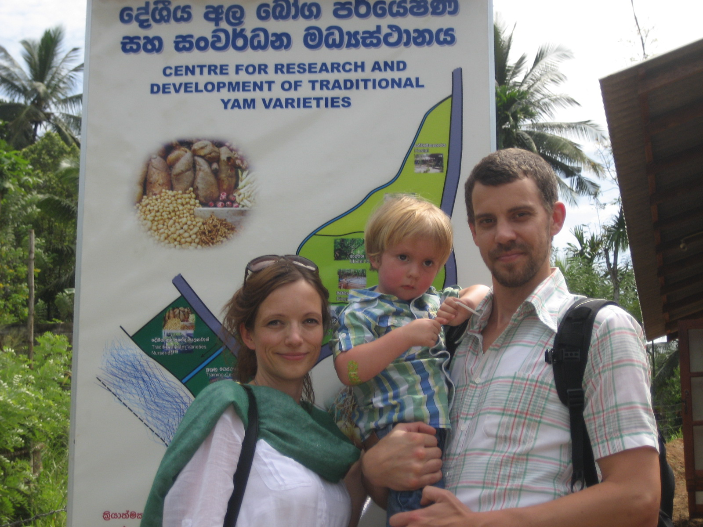

Community-based eco tourism · Sri Lanka
Where Nature Meets Community
Slow down. Walk through living forests, share meals in village homes, and discover Sri Lanka through the hands and hearts of the communities who protect it.
Plan Your VisitWhat to expect
Four ways to experience the land
Each visit is shaped by where you are and who you meet — not a fixed itinerary, but an open invitation.


“The land, the people,
and the food all speak the same story.”
Why it matters
Not tourism.
A living connection.
CDC’s eco tourism isn’t about sightseeing — it’s about participation. Visitors are welcomed into living places, not staged experiences.
-
Rooted in conservation
Every visit connects directly to CDC’s on-the-ground environmental and biodiversity work.
-
Community-led and owned
Local families and community groups are the hosts, the guides, and the beneficiaries.
-
Slow, meaningful, low-impact
No luxury packaging. No rush. Just genuine encounters with people, land, and tradition.

Come and explore
Ready to visit?
Reach out to CDC to learn more about eco tourism opportunities, plan a group visit, or connect with the communities you’d like to meet.